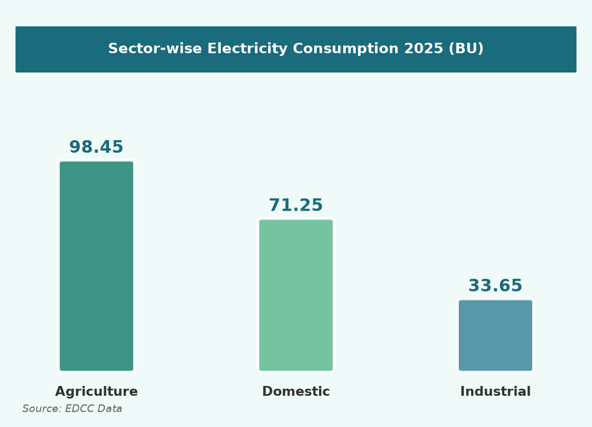
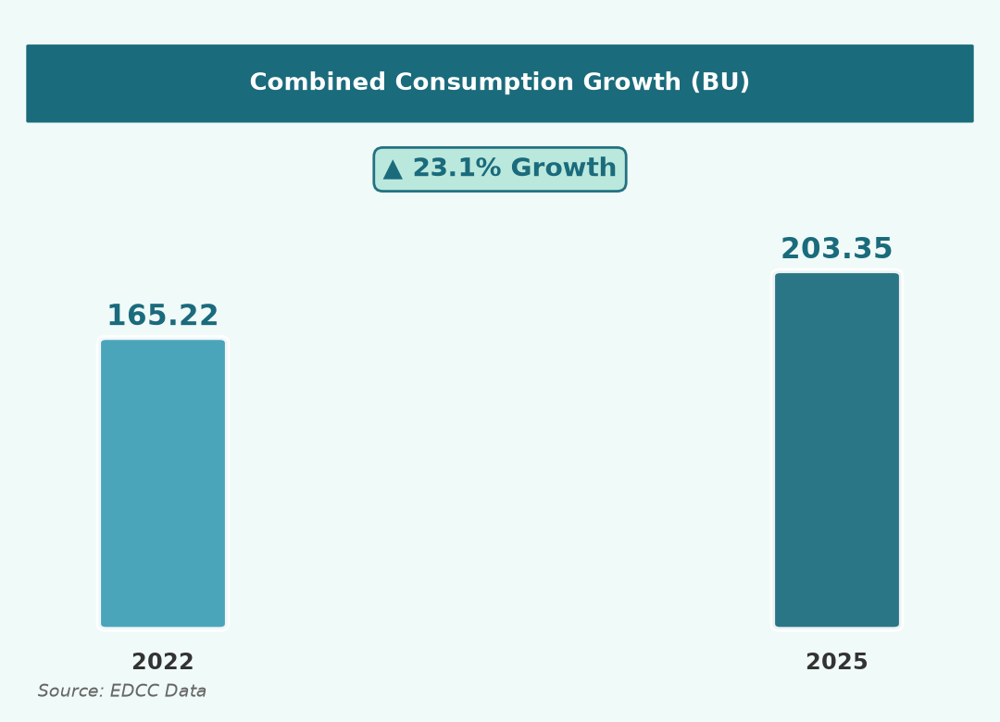
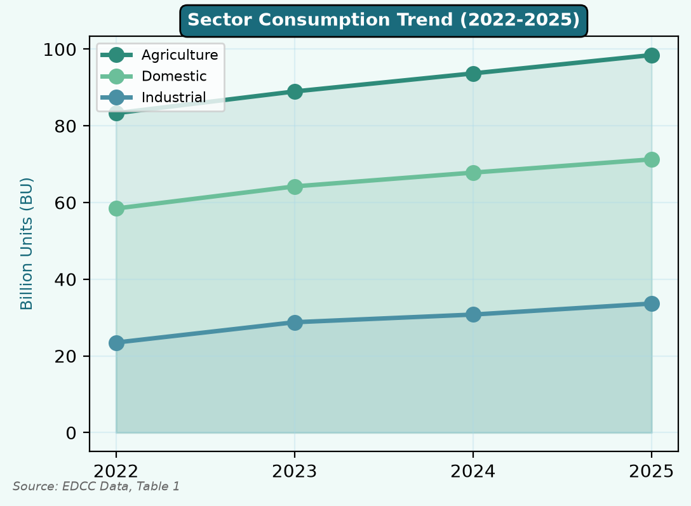
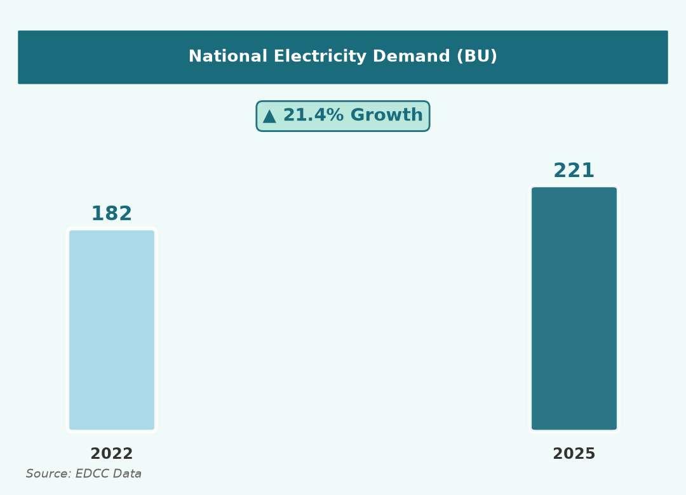
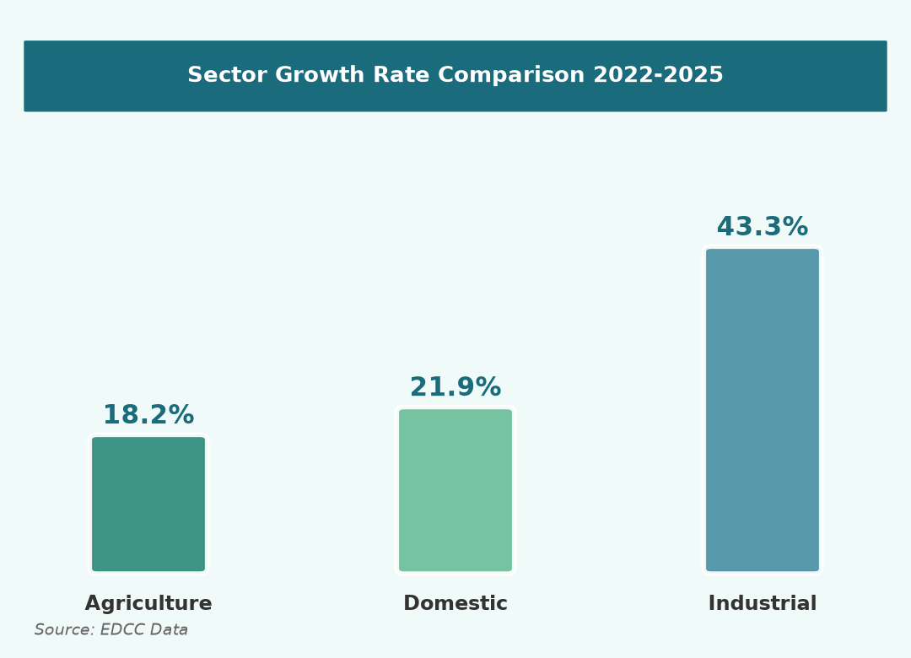
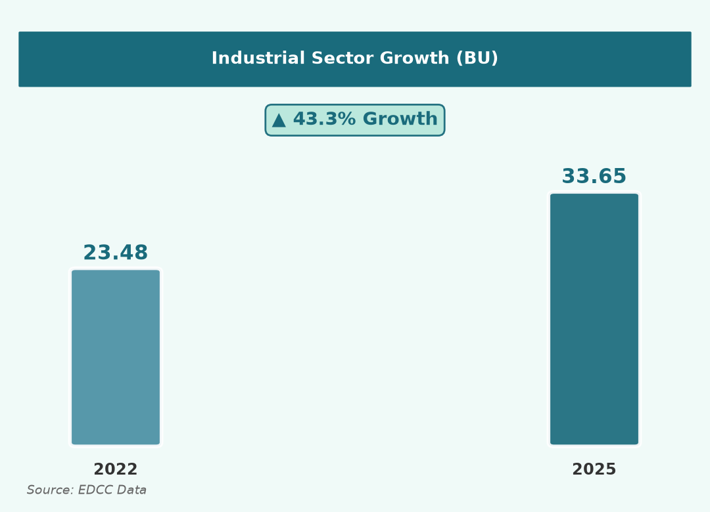

Trend in Electricity Consumption
Sector-Wise Analysis & Overall Growth Patterns (2022–2025)
Prepared by: Jaya | August 2026
- Combined consumption rose from 165.22 BU (2022) to 203.35 BU (2025) — total growth of 23.1%
- Agriculture is the largest consumer: 98.45 BU — 48.4% share in 2025
- Domestic consumption reached 71.25 BU (+21.9%) due to urbanisation & AC use
- Industrial sector surged 22.6% in 2022–23 alone — fastest growing sector
- National demand grew 182 → 221 BU (+21.4%), matching sector trends closely
Main Finding: Electricity consumption increased in every sector, every year from 2022 to 2025 with no decline — confirming sustained pressure on India's power infrastructure.
Electricity consumption across agriculture, industrial, and domestic sectors has risen steadily between 2022 and 2025. The data in Table 1 shows continuous year-on-year growth, reflecting the Chairman's concern over rising electricity use and the need for sustainable energy planning.
Table 1: Sector-wise Electricity Consumption (Billion Units)
| Sector | 2022 | 2023 | 2024 | 2025 | Growth |
|---|
| 🌾 Agriculture | 83.30 | 88.96 | 93.67 | 98.45 | +18.2% |
| 🏠 Domestic | 58.44 | 64.20 | 67.80 | 71.25 | +21.9% |
| 🏭 Industrial | 23.48 | 28.78 | 30.78 | 33.65 | +43.3% ★ |
98.45 BU
Agriculture
Largest | 48.4%
71.25 BU
Domestic
2nd | +21.9%
33.65 BU
Industrial
Fastest | +43.3% ★




Highest Growth Sector Analysis
Identification of Dominant Sector & Key Drivers (2022–2025)
Prepared by: Jaya | August 2026
- Industrial sector = HIGHEST GROWTH at 43.3% — more than double agriculture (18.2%)
- Industrial CAGR of 12.7% — highest among all sectors; peak year 22.6% in 2022–23
- Industrial share of domestic use rose: 40.2% → 47.2% — structural shift in demand
- Key drivers: industrial expansion | agricultural irrigation | urbanisation & AC use
- All sectors contribute to peak electricity demand alongside cooling requirements
★ Dominant Sector: The Industrial sector recorded the highest growth at 43.3% during 2022–2025. While Agriculture adds the most absolute consumption (+15.15 BU), Industry is expanding at the fastest rate.
Comparative Growth Analysis (2022–2025)
| Measure | Agriculture | Industrial ★ | Domestic |
|---|
| 2022 (BU) | 83.30 | 23.48 | 58.44 |
| 2025 (BU) | 98.45 | 33.65 | 71.25 |
| Absolute Growth | +15.15 BU | +10.17 BU | +12.81 BU |
| % Growth | 18.2% | 43.3% ★ | 21.9% |
| CAGR | 5.8% | 12.7% ★ | 6.7% |
| Best Single Year | 6.8% | 22.6% ★ | 9.9% |


Key Drivers of Sectoral Growth
🏭 Industrial +43.3% ★
• Industrial expansion
• 22.6% surge in 2022–23
• Year-round peak demand
• Continuous YoY growth
🌾 Agriculture +18.2%
• Increased irrigation
• Largest base (83.30 BU)
• +15.15 BU absolute
• Seasonal peak load
🏠 Domestic +21.9%
• Rapid urbanisation
• Higher AC use
• 9.9% peak in 2022–23
• Steady 5–10% growth
Conclusion:
Consumption rose in every sector every year. Combined total grew 23.1% (165.22 → 203.35 BU).
Agriculture is the largest consumer (98.45 BU).
The Industrial sector recorded the highest growth at 43.3% —
driven by industrial expansion, with implications for peak demand and infrastructure planning.